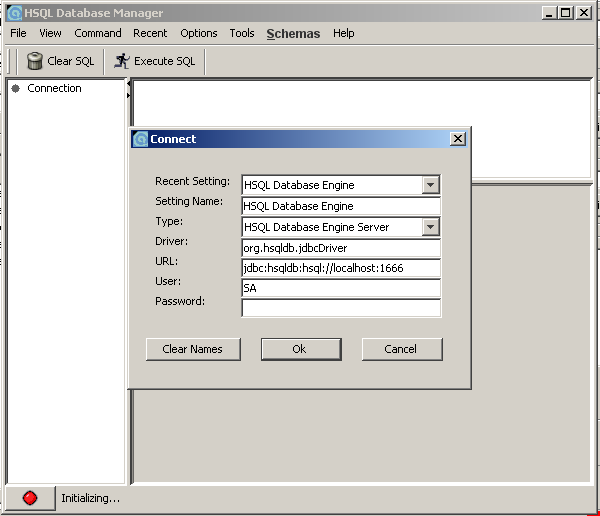

Détails sur le serveur de base de données HSQL
Quelques notions de base de données sont nécessaires pour ce guide. Il faut aussi préalablement avoir installé OpenXavaLancer le serveur HSQL
Nous avons créé une base de données management-db (ou peut-être nous voulons en créer une). A partir de la ligne de commande, nous devons nous placer dans le dossier openxava-2.x/portal/bin (openxava-2.x étant le dossier dans lequel vous avez installé OpenXava) puis exécuter la commande suivante :- Sous Linux/Unix : ./starthsqldb.sh management-db 1666
- Sous Windows : starthsqldb management-db 1666
HSQL Administrator
Cette application est disponible sur le site web de HSQL et il faut simplement l'installer. Une fois ceci fait, il suffit de lancer runManagerSwing.bat dans le sous-dossier demo. A présent, il est plus facile d'administrer notre base de données management-db. Dans la figure suivante sont affichées les options de connexion à la base de données.
Dans la figure suivante, nous avons un catalogue nommé "GESTIO" et plusieurs tables créées. L'une de ces tables s'appelle ININ03. A présent, nous pouvons essayer quelques commandes SQL pour faire des recherches, ajouter des données ou créer des nouvelles tables. Nous devons utiliser un caractère '_' pour séparer le nom du catalogue du nom de la table dans les commandes SQL. Un exemple ci-dessous est données avec un SELECT :